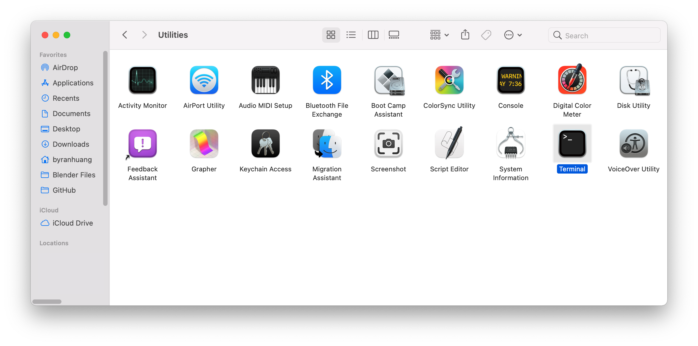
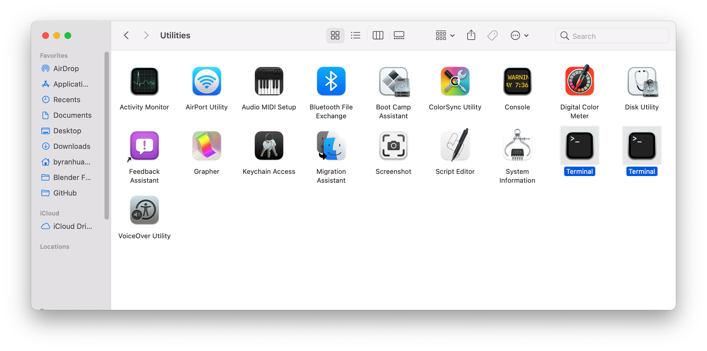
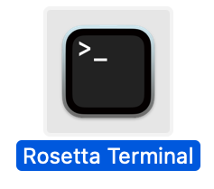
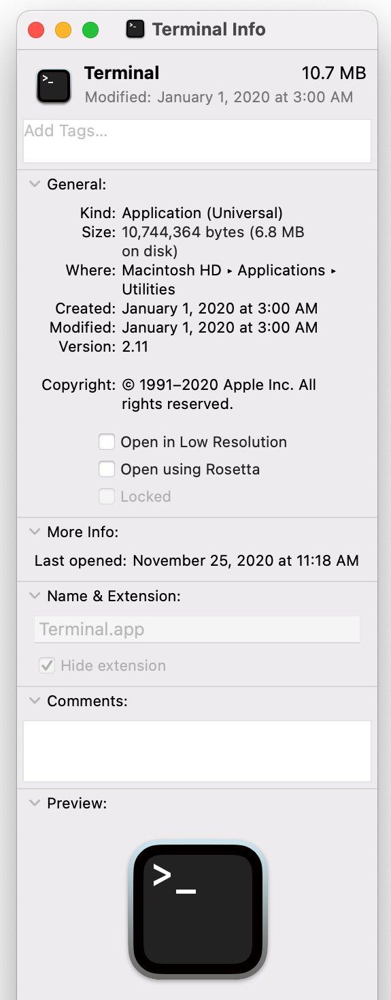
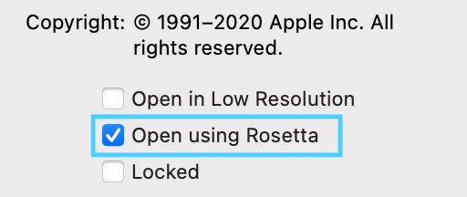
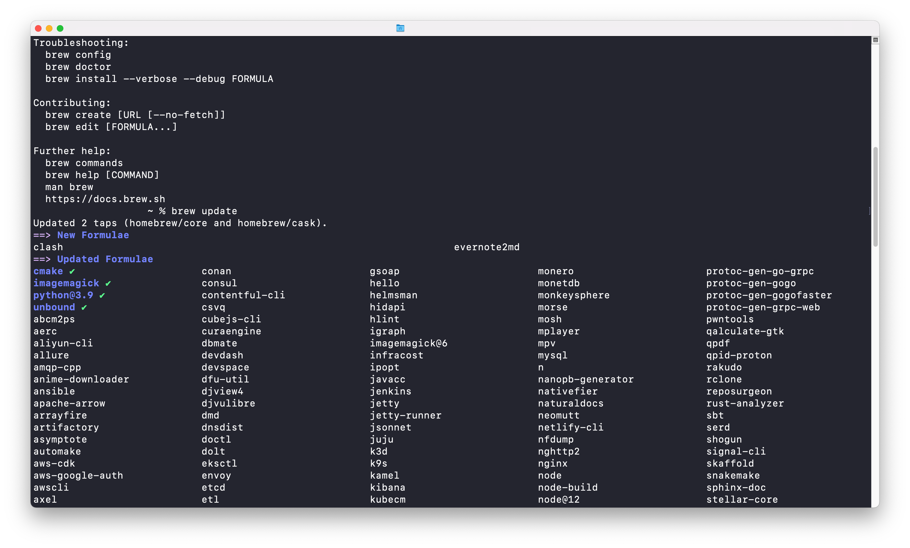
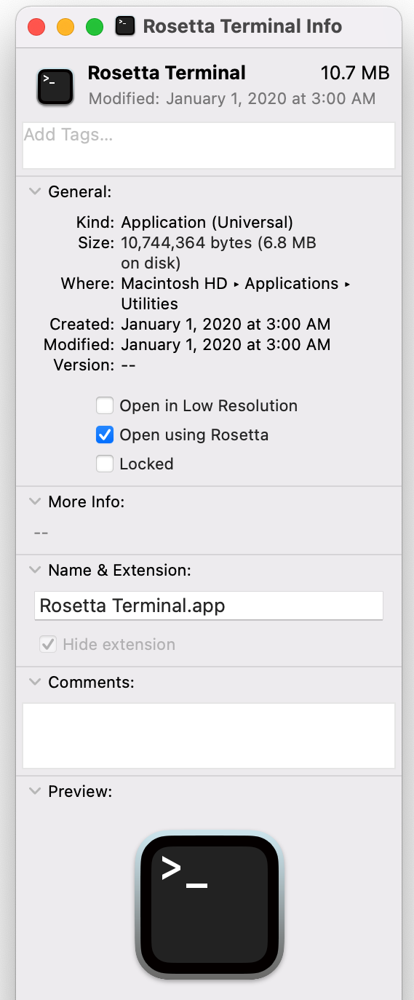
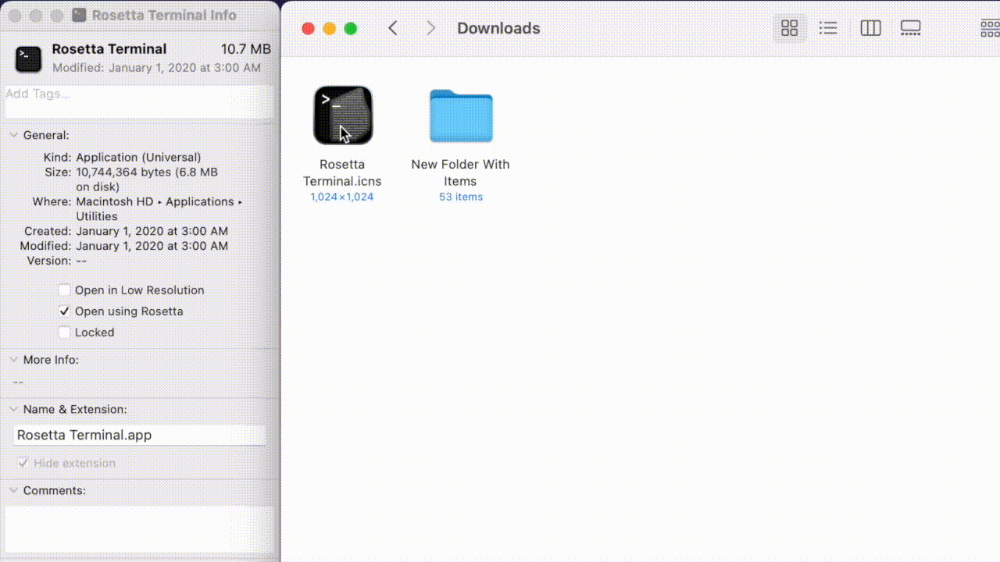
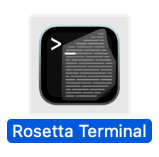

Wednesday, November 25, 2020
Wednesday, November 25, 2020
Apple Silicon just launched with the M1 MacBook Air, Pro, and Mac Mini. M1 brings huge performance jumps and never-before seen performance per watt.
However, there are many applications and use-cases where x86 emulation is the only way to go. I am assuming since you need a Rosetta Terminal on Mac, you understand the basics of macOS and Terminal. If you don't, I wrote a handy-dandy handbook on how to use macOS better!
Onwards with the tutorial!
1. Find the Terminal application in Finder (file path: /System/Applications/Utilities/Terminal.app)
2. Press command-D to duplicate a copy of Terminal. This copy will be used to emulate x86 with Rosetta 2
3. Rename the Terminal to Rosetta Terminal or anything of your choice.
4. Choose the Rosetta Terminal and press command-I (I as in idea)
5. Click on Open using Rosetta, making the tick-box blue.
6. Close the Info window and restart the Terminal.
7. Done! This Terminal is now emulated with Rosetta 2, meaning it can run x86 apps (ex. homebrew) flawlessly! (Your Terminal may look different. The Dracula theme for Terminal is installed. Check it out here.)
Optional: Changing the Logo
8. Download the .icns (icon file) to change the logo.
9. Select the Rosetta Terminal and press command-I (I as in idea).
10. Drag the file from the Downloads folder onto the mini icon on the top left corner.
11. Done! Now Rosetta Terminal looks like this:
